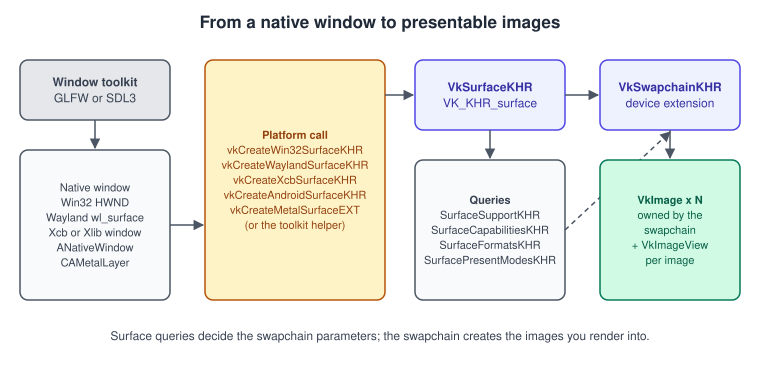
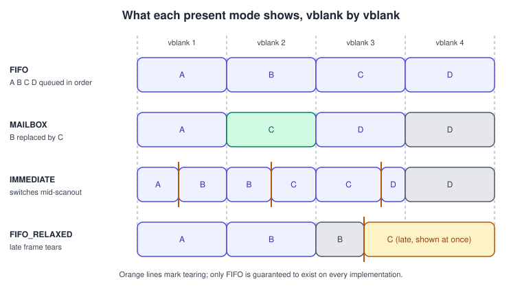
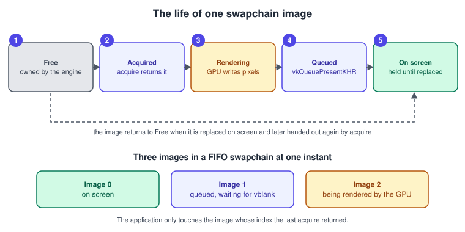
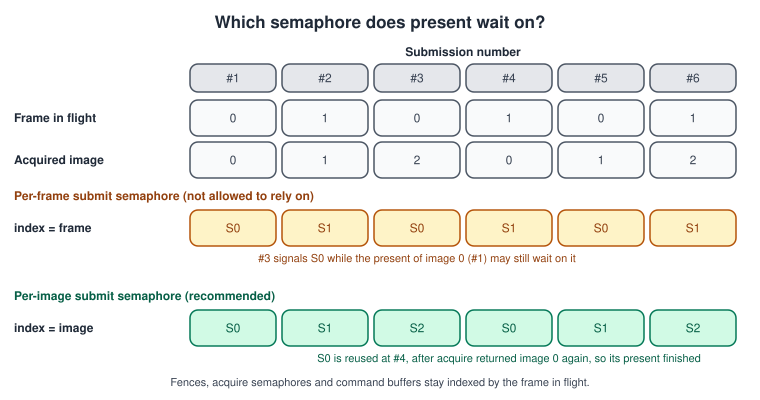
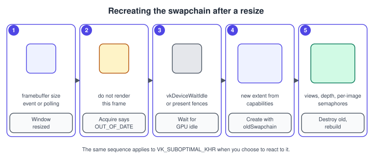

Window System Integration and the Swapchain
|
This content was generated with the assistance of AI and should be verified against the official documentation before being relied on in production. |
Vulkan itself knows nothing about windows. A device can render into images, but showing one of those images on a screen is the job of a separate group of extensions called the Window System Integration (WSI). They give you a surface that stands for a native window, a swapchain that owns a small set of images the display can show, and two calls, acquire and present, that hand images back and forth between your program and the presentation engine of the operating system. Getting this right is the difference between a window that tears, stutters or crashes on resize and one that behaves like a normal application.
The facts on this page were checked in November 2026. They describe Vulkan 1.4 (headers 1.4.3xx, LunarG SDK 1.4.363.0), with the
Vulkan 1.3 level that the Bookshelf needs as the minimum. The core swapchain functionality is the VK_KHR_swapchain device extension
and the instance extension VK_KHR_surface; both are Khronos-ratified and available on Windows, Linux (Wayland, Xcb, Xlib and direct
display), Android and, through the portability layers, macOS and iOS (see
Vulkan on Apple). Newer behaviour comes from
VK_KHR_swapchain_maintenance1 (ratified, revision 1 dated 2025-03-31, based on the earlier VK_EXT_swapchain_maintenance1),
VK_KHR_present_wait2 and the present id extensions. The code is C++20 using Vulkan-Hpp RAII wrappers, with the window created by
GLFW or SDL3.
This is the page where the Bookshelf running example gets its window: after the instance with validation (Instance, Loader and Layers) and the device (Physical and Logical Devices), the program creates a surface, a swapchain and the per-image objects needed to clear the window and, on the next pages, draw the triangle and the first textured book. The generic idea of double and triple buffering is explained in The Rendering Pipeline and Game Loop and Frame Timing; the equivalents in other APIs are in OpenGL contexts and windows and MetalKit and MTKView.
The big picture

The objects, in creation order:
| Object | Created by | Notes |
|---|---|---|
|
A platform function such as |
Belongs to the instance, not to a device. It must exist before you pick a physical device, because queue family support for presentation is a property of the (device, surface) pair. |
|
|
Belongs to one surface. Owns an implementation-chosen number of |
|
|
You never create or destroy these. They live as long as the swapchain. |
|
|
Needed to use the image as a colour attachment with dynamic rendering. Destroyed before the swapchain. |
The full list of platform surface functions in the Vulkan Guide also includes DirectFB, Fuchsia, VI, QNX Screen and direct-to-display
(vkCreateDisplayPlaneSurfaceKHR). The earlier Vulkan Programming Guide (VPG, chapter 5) lists Mir among the Linux window systems; the
current Vulkan Guide no longer lists a Mir surface function, and Wayland is the modern Linux compositor path. The Vulkan Cookbook
(VCB, chapter 2) predates the Metal surface and the portability layers.
Step 1: the instance extensions and the surface
The instance must enable VK_KHR_surface and the platform extension that matches the window system. You do not normally spell those out:
GLFW and SDL3 report the extensions they need.
-
GLFW:
glfwGetRequiredInstanceExtensions(&count)returns the names andglfwCreateWindowSurface(instance, window, nullptr, &surface)creates the surface. Create the window withglfwWindowHint(GLFW_CLIENT_API, GLFW_NO_API)so GLFW does not create an OpenGL context. -
SDL3: create the window with the
SDL_WINDOW_VULKANflag, querySDL_Vulkan_GetInstanceExtensions(&count)and create the surface withSDL_Vulkan_CreateSurface(window, instance, nullptr, &surface).
On macOS and iOS with MoltenVK, the loader additionally needs VK_KHR_portability_enumeration and the instance create flag
eEnumeratePortabilityKHR, and the device needs VK_KHR_portability_subset. These are covered in
Instance, Loader and Layers.
#include <vulkan/vulkan_raii.hpp>
#include <GLFW/glfw3.h>
#include <stdexcept>
#include <vector>
struct Window {
GLFWwindow* handle = nullptr;
Window(int w, int h, const char* title) {
if (!glfwInit()) throw std::runtime_error("glfwInit failed");
glfwWindowHint(GLFW_CLIENT_API, GLFW_NO_API); // no OpenGL context
handle = glfwCreateWindow(w, h, title, nullptr, nullptr);
if (!handle) throw std::runtime_error("glfwCreateWindow failed");
}
~Window() { if (handle) glfwDestroyWindow(handle); glfwTerminate(); }
Window(const Window&) = delete;
Window& operator=(const Window&) = delete;
};
// Extensions the toolkit needs, plus our own (debug utils, portability).
std::vector<const char*> instanceExtensions() {
uint32_t n = 0;
const char** glfwExt = glfwGetRequiredInstanceExtensions(&n);
std::vector<const char*> ext(glfwExt, glfwExt + n);
ext.push_back(VK_EXT_DEBUG_UTILS_EXTENSION_NAME);
return ext;
}
vk::raii::SurfaceKHR makeSurface(const vk::raii::Instance& instance, GLFWwindow* window) {
VkSurfaceKHR raw = VK_NULL_HANDLE;
if (glfwCreateWindowSurface(*instance, window, nullptr, &raw) != VK_SUCCESS)
throw std::runtime_error("cannot create surface");
return vk::raii::SurfaceKHR(instance, raw); // takes ownership
}The same step with SDL3 replaces the window class and the two calls; everything after the surface is identical, which is the point of the surface abstraction.
#include <SDL3/SDL.h>
#include <SDL3/SDL_vulkan.h>
SDL_Window* window = SDL_CreateWindow("Bookshelf", 1280, 720,
SDL_WINDOW_VULKAN | SDL_WINDOW_RESIZABLE);
Uint32 count = 0;
char const* const* ext = SDL_Vulkan_GetInstanceExtensions(&count); // for the instance
VkSurfaceKHR raw = VK_NULL_HANDLE;
if (!SDL_Vulkan_CreateSurface(window, *instance, nullptr, &raw)) // returns bool in SDL3
throw std::runtime_error(SDL_GetError());
vk::raii::SurfaceKHR surface(instance, raw);Source: SDL3: SDL_Vulkan_CreateSurface and GLFW: Vulkan guide
Step 2: can this queue present?
A queue family that can run graphics commands cannot necessarily present to every surface. Ask with
vkGetPhysicalDeviceSurfaceSupportKHR(physicalDevice, queueFamilyIndex, surface, &supported). Most desktop and mobile GPUs let the
graphics family present, so the Bookshelf uses one queue for both and avoids ownership transfers (see
Synchronization and sync2). When no family does both, you pick two families and
either create the swapchain with VK_SHARING_MODE_CONCURRENT or transfer ownership of each image before presenting.
std::optional<uint32_t> findGraphicsPresentFamily(const vk::raii::PhysicalDevice& gpu,
const vk::raii::SurfaceKHR& surface) {
auto families = gpu.getQueueFamilyProperties();
for (uint32_t i = 0; i < families.size(); ++i) {
bool graphics = static_cast<bool>(families[i].queueFlags & vk::QueueFlagBits::eGraphics);
bool present = gpu.getSurfaceSupportKHR(i, *surface);
if (graphics && present) return i;
}
return std::nullopt;
}Step 3: the three surface queries
Everything you may put in VkSwapchainCreateInfoKHR is constrained by what the surface and the device support. Three queries
describe the constraints, and a fourth form, VkSurfaceCapabilities2KHR with VK_KHR_get_surface_capabilities2, extends them with
pNext structures.
| Query | Returns | Used for |
|---|---|---|
|
|
Image count, extent, |
|
A list of |
|
|
A list of |
|
currentExtent equals (0xFFFFFFFF, 0xFFFFFFFF) on platforms where the surface adopts whatever size the swapchain asks for (Wayland
is the common case). Then you clamp the framebuffer size reported by the toolkit between minImageExtent and maxImageExtent. A
minimised window reports an extent of zero in one or both dimensions on some platforms; a swapchain cannot be created with a zero extent,
so the program must wait until the window has a size again.
Step 4: choose format, colour space, mode, extent and count
Surface format and colour space
Pick a four-channel 8-bit format whose colour space is VK_COLOR_SPACE_SRGB_NONLINEAR_KHR. Two choices are common:
-
VK_FORMAT_B8G8R8A8_SRGB(orR8G8B8A8_SRGB): the hardware applies the sRGB transfer function when you write linear values from the fragment shader. This is the simplest correct choice for a linear lighting workflow (see Colour Spaces, HDR and Tone Mapping). -
VK_FORMAT_B8G8R8A8_UNORM: no automatic conversion, so the shader must encode to sRGB itself. It is also the format to use when a post-processing pass writes the final colour, or when you needSTORAGEusage that sRGB formats rarely allow.
HDR output needs VK_EXT_swapchain_colorspace (an instance extension) to expose colour spaces such as
VK_COLOR_SPACE_HDR10_ST2084_EXT and extended-sRGB spaces; this is a platform question as much as a Vulkan one, so check
the surface formats the device reports rather than assuming.
Present mode
A present mode defines how a presented image is queued for the display and when the previous image is released. The modes defined by the extensions you will meet are:

| Mode | Behaviour | Tearing | Typical use |
|---|---|---|---|
|
Waits for the vertical blank. Requests go into a queue and one is consumed per blank, like SwapBuffers with an interval of 1. The only mode every implementation must support. |
No |
The default for games and tools; lowest power, steady pacing. |
|
Waits for the vertical blank, with a one-entry queue. A new request replaces the pending one, which becomes free for reuse. |
No |
Low latency without tearing when the GPU renders faster than the display. Uses more power because the GPU keeps rendering. |
|
Does not wait for the vertical blank; the image is applied as soon as possible. |
Yes |
Benchmarks and latency tests. |
|
Like FIFO, but when a blank has already passed since the last update the image is applied at once. |
Only when late |
Adaptive sync-like behaviour: do not halve the frame rate when a frame is slightly late. |
|
Waits for the blank; at each blank, all ready requests at the front of the queue are dequeued and the last one is shown, the others dropped. |
No |
FIFO pacing that skips stale frames; also available as the older |
|
One shared image that the application and the presentation engine access concurrently ( |
Possible |
Specialised low-latency embedded and mobile cases. |
If you ask for MAILBOX and the surface does not offer it, fall back to FIFO. A frame-rate limiter, not a present mode, is the right way to cap the rate; leaving a game on IMMEDIATE and calling sleep is how laptops get hot.
The queue depth of FIFO gives its latency. With \( n \) images queued and a refresh period \( T = 1 / f \), the image you present now is shown about \( n \cdot T \) later. A deeper queue smooths pacing; a shallower one reduces latency. MAILBOX avoids this trade-off by discarding all but the newest image.
Extent
Use capabilities.currentExtent unless it is 0xFFFFFFFF; otherwise clamp the framebuffer size in pixels (not the window size in screen
coordinates; high-DPI displays differ) to the minimum and maximum extents. Use glfwGetFramebufferSize or SDL_GetWindowSizeInPixels.
Image count
minImageCount in VkSwapchainCreateInfoKHR is the number of images the application needs; the driver creates at least that many, and
may create more. The valid range is the surface’s minImageCount to its maxImageCount (unless that is 0). The usual rule is
capabilities.minImageCount + 1, so the program can render into one image while the presentation engine still holds the minimum number.
With FIFO, three is the common result on desktop; MAILBOX needs at least three to be useful. Call vkGetSwapchainImagesKHR after
creation, because the real count may be larger than the request, and size every per-image array from it.
Other VkSwapchainCreateInfoKHR fields
| Field | Meaning | Advice |
|---|---|---|
|
|
Zero for the Bookshelf. |
|
Layers per image |
1, or 2 for stereo with multiview. |
|
How you use the images; must be a subset of |
|
|
Exclusive or concurrent. Concurrent needs at least two distinct families. |
Exclusive; the Bookshelf’s single family never needs a transfer. |
|
Rotation or mirroring that your rendering already applied, relative to the display’s natural orientation |
|
|
How the window system blends the surface with others |
|
|
Lets the implementation skip pixels hidden by other windows |
|
|
A non-retired swapchain for the same surface to replace |
Pass the previous one when recreating; see below. |
Step 5: create the swapchain
The code below chooses everything described above, makes the swapchain, and creates the image views. It takes the previous swapchain
to support recreation: constructing a new swapchain with oldSwapchain set retires the old one even if creation fails, so destroy the old
one once you no longer use it.
struct SwapchainSupport {
vk::SurfaceCapabilitiesKHR caps;
std::vector<vk::SurfaceFormatKHR> formats;
std::vector<vk::PresentModeKHR> modes;
};
SwapchainSupport querySupport(const vk::raii::PhysicalDevice& gpu, const vk::raii::SurfaceKHR& s) {
return { gpu.getSurfaceCapabilitiesKHR(*s), gpu.getSurfaceFormatsKHR(*s), gpu.getSurfacePresentModesKHR(*s) };
}
vk::SurfaceFormatKHR chooseFormat(const std::vector<vk::SurfaceFormatKHR>& formats) {
for (auto& f : formats)
if (f.format == vk::Format::eB8G8R8A8Srgb && f.colorSpace == vk::ColorSpaceKHR::eSrgbNonlinear)
return f;
return formats.front(); // always at least one entry
}
vk::PresentModeKHR chooseMode(const std::vector<vk::PresentModeKHR>& modes, bool lowLatency) {
if (lowLatency)
for (auto m : modes) if (m == vk::PresentModeKHR::eMailbox) return m;
return vk::PresentModeKHR::eFifo; // guaranteed
}
vk::Extent2D chooseExtent(const vk::SurfaceCapabilitiesKHR& c, GLFWwindow* window) {
if (c.currentExtent.width != std::numeric_limits<uint32_t>::max()) return c.currentExtent;
int w = 0, h = 0;
glfwGetFramebufferSize(window, &w, &h); // pixels, not screen coordinates
return { std::clamp<uint32_t>(w, c.minImageExtent.width, c.maxImageExtent.width),
std::clamp<uint32_t>(h, c.minImageExtent.height, c.maxImageExtent.height) };
}
struct Swapchain {
vk::raii::SwapchainKHR chain = nullptr;
std::vector<vk::Image> images; // owned by the swapchain
std::vector<vk::raii::ImageView> views;
vk::Format format{};
vk::Extent2D extent{};
};
Swapchain createSwapchain(const vk::raii::Device& device, const vk::raii::PhysicalDevice& gpu,
const vk::raii::SurfaceKHR& surface, GLFWwindow* window,
vk::SwapchainKHR old = nullptr, bool lowLatency = false) {
auto sup = querySupport(gpu, surface);
auto fmt = chooseFormat(sup.formats);
auto extent = chooseExtent(sup.caps, window);
uint32_t count = sup.caps.minImageCount + 1;
if (sup.caps.maxImageCount > 0) count = std::min(count, sup.caps.maxImageCount);
vk::SwapchainCreateInfoKHR info{};
info.surface = *surface;
info.minImageCount = count;
info.imageFormat = fmt.format;
info.imageColorSpace = fmt.colorSpace;
info.imageExtent = extent;
info.imageArrayLayers = 1;
info.imageUsage = vk::ImageUsageFlagBits::eColorAttachment | vk::ImageUsageFlagBits::eTransferDst;
info.imageSharingMode = vk::SharingMode::eExclusive;
info.preTransform = sup.caps.currentTransform; // identity on desktop
info.compositeAlpha = vk::CompositeAlphaFlagBitsKHR::eOpaque;
info.presentMode = chooseMode(sup.modes, lowLatency);
info.clipped = VK_TRUE;
info.oldSwapchain = old;
Swapchain sc;
sc.chain = vk::raii::SwapchainKHR(device, info);
sc.images = sc.chain.getImages(); // the driver may return more than 'count'
sc.format = fmt.format;
sc.extent = extent;
for (vk::Image img : sc.images) {
vk::ImageViewCreateInfo v{};
v.image = img;
v.viewType = vk::ImageViewType::e2D;
v.format = fmt.format;
v.subresourceRange = { vk::ImageAspectFlagBits::eColor, 0, 1, 0, 1 };
sc.views.emplace_back(device, v);
}
return sc;
}The tutorial and many older programs request exactly minImageCount and then assume the number returned. Always read the real image
list.
== The life of a swapchain image

At any instant the images are split between the presentation engine (showing or waiting) and your program (the one just acquired).
vkAcquireNextImageKHR(device, swapchain, timeout, semaphore, fence, &index) asks the engine for the next free image. The call may
return before the image is actually usable, because the engine may still be reading it. The semaphore (or fence) you pass is signalled when
the image is really ready; your first command that touches the image must wait on it. vkQueuePresentKHR hands the image back and takes
semaphores to wait for before the engine reads it.
Two rules follow, and breaking either is a common source of validation errors and rare hangs:
-
The acquire semaphore is signalled when the image is ready, so the submit that renders into the image waits on it at
COLOR_ATTACHMENT_OUTPUT, the stage at which the image is first written. -
The present call waits on a semaphore signalled by that submit, so presentation happens only after rendering finishes.
The frame loop with semaphores and fences
The loop has two kinds of resource. Per frame in flight (two for the Bookshelf): a command buffer, an acquire semaphore and a fence. Per swapchain image: the semaphore that present waits on. The reason is the next section.
struct FrameSync {
vk::raii::CommandBuffer cmd;
vk::raii::Semaphore acquired;
vk::raii::Fence inFlight; // created signalled
};
struct Renderer {
vk::raii::Device device;
vk::raii::Queue queue; // graphics and present
Swapchain sc;
std::vector<vk::raii::Semaphore> renderDone; // one per swapchain image
std::vector<FrameSync> frames; // MAX_FRAMES_IN_FLIGHT = 2
uint32_t frame = 0;
bool framebufferResized = false;
/* ... */
void makePerImageSemaphores() {
renderDone.clear();
for (size_t i = 0; i < sc.images.size(); ++i)
renderDone.emplace_back(device, vk::SemaphoreCreateInfo{});
}
void drawFrame() {
FrameSync& f = frames[frame];
while (device.waitForFences(*f.inFlight, VK_TRUE, UINT64_MAX) == vk::Result::eTimeout) {}
uint32_t image = 0;
try {
auto [res, idx] = sc.chain.acquireNextImage(UINT64_MAX, *f.acquired, nullptr);
image = idx;
// res may be eSuboptimalKHR: the image is usable, plan to recreate after presenting.
if (res == vk::Result::eSuboptimalKHR) framebufferResized = true;
} catch (const vk::OutOfDateKHRError&) {
recreateSwapchain(); // nothing was signalled; skip this frame
return;
}
device.resetFences(*f.inFlight); // only after a successful acquire
f.cmd.reset();
recordFrame(f.cmd, image); // barrier, beginRendering, draws, barrier
vk::SemaphoreSubmitInfo wait{ *f.acquired, 0, vk::PipelineStageFlagBits2::eColorAttachmentOutput };
vk::SemaphoreSubmitInfo signal{ *renderDone[image], 0, vk::PipelineStageFlagBits2::eColorAttachmentOutput };
vk::CommandBufferSubmitInfo cmdInfo{ *f.cmd };
vk::SubmitInfo2 submit{ {}, wait, cmdInfo, signal };
queue.submit2(submit, *f.inFlight);
vk::PresentInfoKHR present{ *renderDone[image], *sc.chain, image };
try {
vk::Result r = queue.presentKHR(present);
if (r == vk::Result::eSuboptimalKHR || framebufferResized) { framebufferResized = false; recreateSwapchain(); }
} catch (const vk::OutOfDateKHRError&) {
recreateSwapchain();
}
frame = (frame + 1) % frames.size();
}
void recordFrame(vk::raii::CommandBuffer&, uint32_t image); // see the barrier page
void recreateSwapchain();
};Four details deserve attention:
-
Reset the fence only after a successful acquire. If acquire fails with out-of-date and you already reset the fence, nothing will ever signal it and the next frame waits forever.
-
VK_SUBOPTIMAL_KHRis a success code. The image can still be rendered and presented. It means the surface properties no longer match the swapchain (for example the window was resized or rotated). Recreating at once is fine; ignoring it for a while is also allowed. -
VK_ERROR_OUT_OF_DATE_KHRis an error that must be handled. The swapchain can no longer present, so recreate before the next frame. In Vulkan-Hpp the RAII wrapper throwsvk::OutOfDateKHRError; the plain C API returns the code. -
The submit uses
vkQueueSubmit2. Stage masks are 64-bit values attached to each semaphore, so the "wait at colour attachment output" rule is stated per semaphore rather than in a parallel array (see Synchronization and sync2). VPG and VCB usevkQueueSubmitwith apWaitDstStageMaskarray.
Swapchain semaphore reuse

For years the standard advice was one set of semaphores per frame in flight: an "image available" and a "render finished" semaphore, both
indexed by the frame counter. That is correct for the acquire semaphore but not for the one that present waits on. The reason is that a
fence on the submit tells you the command buffers finished, yet vkQueuePresentKHR signals neither a fence nor a semaphore, so your
program has no direct way to know when the presentation engine has stopped waiting on the semaphore you gave it. The only reliable
signal is vkAcquireNextImageKHR returning that image index again: when it does, the previous present that used the image has
completed, so the semaphore associated with the image can be signalled again.
The rule, as the Vulkan Guide states it, is to size the semaphores in VkPresentInfoKHR::pWaitSemaphores by the swapchain image count and
index them with the acquired image index, while fences, acquire semaphores and command buffers stay indexed by the frame in flight. The
code above does exactly that with renderDone[image]. Older programs that indexed by frame often appear to work because many drivers
tolerate it, but the validation layers flag it and a few implementations genuinely misbehave.
This rule post-dates both books: VPG (chapter 11) and VCB (chapters 2 and 3) were written for Vulkan 1.0 with binary semaphores and fences only, before the reuse rules and present fences existed.
Releasing the semaphores at shutdown
With vkDeviceWaitIdle you wait for the GPU, but you do not wait for the presentation engine: neither vkDeviceWaitIdle nor
vkQueueWaitIdle covers presentation. Destroying a semaphore or the swapchain while the engine may still use it is illegal. Without
extensions, the safe way is to acquire all remaining images, or to keep the swapchain alive until the window system is torn down. With
VK_KHR_swapchain_maintenance1 you attach a fence to the present and wait on it. The Vulkan Guide describes the semaphore reuse article
in terms of the EXT version; the KHR extension has the same features.
Recreating the swapchain
A swapchain is bound to the size and properties of a surface at creation. Resize, rotation, moving the window to a monitor with a different format or HDR state, a display mode change on a full-screen swapchain, or a driver update that invalidates the old images all make it out of date.

Steps and reasons:
-
Detect. React to an out-of-date result from acquire or present, to
VK_SUBOPTIMAL_KHR, and also to the toolkit’s resize callback. A resize event is not enough on every platform: Wayland compositors, for example, may not report the new size to Vulkan until the next acquire. -
Pause on zero size. When either framebuffer dimension is zero (minimised window), block on
glfwWaitEvents()until it is not. -
Make sure the old images are free. Call
device.waitIdle()(simple, fine for resizing). A frame-time-sensitive program can instead wait on the present fences ofVK_KHR_swapchain_maintenance1and the frame fences. -
Create the new swapchain with
oldSwapchain. The driver can reuse resources, and images already acquired from the old swapchain can still be presented. Creating with a non-nulloldSwapchainretires it, even if the creation fails. -
Destroy the old objects in this order: image views, then the retired swapchain. Rebuild everything that depends on the extent or the image count: depth buffers, MSAA targets, per-image semaphores and any framebuffers (there are none with dynamic rendering).
void Renderer::recreateSwapchain() {
int w = 0, h = 0;
glfwGetFramebufferSize(window, &w, &h);
while (w == 0 || h == 0) { // minimised
glfwWaitEvents();
glfwGetFramebufferSize(window, &w, &h);
}
device.waitIdle();
vk::SwapchainKHR old = *sc.chain;
Swapchain fresh = createSwapchain(device, gpu, surface, window, old, lowLatency);
sc.views.clear(); // destroy views of the old swapchain first
sc = std::move(fresh); // old vk::raii::SwapchainKHR is destroyed here
makePerImageSemaphores(); // size may differ
createDepthTarget(sc.extent); // anything that depends on the extent
}Careful with the order inside the sketch: the RAII object of the old swapchain must still be alive when the new swapchain is created
(it provides oldSwapchain), and must be destroyed only after the views created from it are gone. Moving the new object over the old one
destroys the old swapchain at the right moment. On Android a rotation or a pre-rotation mismatch also lands here, covered below.
Present fences and swapchain maintenance 1
VK_KHR_swapchain_maintenance1 (ratified, revision 1 on 2025-03-31, based on VK_EXT_swapchain_maintenance1; it requires
VK_KHR_swapchain, VK_KHR_surface_maintenance1 and either VK_KHR_get_physical_device_properties2 or Vulkan 1.1) adds the pieces
that the base swapchain lacks:
| Feature | What it gives you |
|---|---|
|
A fence signalled when the resources of that present (including the wait semaphores) can be safely destroyed or reused. This is the direct answer to the semaphore reuse problem and to clean shutdown. |
|
Create the swapchain with a set of compatible present modes and switch among them on a per-present basis, without recreating the swapchain. |
|
Defines what the presentation engine does when the image size and the surface size differ, so a resize does not force an immediate recreation. |
|
Releases images you acquired but decided not to present, which previously forced you to present them anyway. |
|
Allocate swapchain image memory lazily, to cut start-up time and memory. |
|
The feature you must enable on the device. |
// Device creation: enable the extension and the feature through the structure chain.
vk::StructureChain<vk::DeviceCreateInfo,
vk::PhysicalDeviceVulkan13Features,
vk::PhysicalDeviceSwapchainMaintenance1FeaturesKHR> chain;
chain.get<vk::PhysicalDeviceVulkan13Features>().dynamicRendering = VK_TRUE;
chain.get<vk::PhysicalDeviceVulkan13Features>().synchronization2 = VK_TRUE;
chain.get<vk::PhysicalDeviceSwapchainMaintenance1FeaturesKHR>().swapchainMaintenance1 = VK_TRUE;
// ... queue create infos, extension names VK_KHR_swapchain and VK_KHR_swapchain_maintenance1
// Present with a fence that tells you when the present's resources are free.
vk::SwapchainPresentFenceInfoKHR fenceInfo{ *presentFences[frame] }; // one fence per present
vk::PresentInfoKHR present{ *renderDone[image], *sc.chain, image };
present.pNext = &fenceInfo;
queue.presentKHR(present);
// later: waitForFences(presentFences[frame]) before reusing renderDone[image] or destroying the swapchainNot every driver exposes the extension, so the Bookshelf uses the per-image semaphore rule as its baseline and the fence as an
optional improvement. The older VK_EXT_swapchain_maintenance1 is still published for drivers that predate the KHR version.
Present id and present wait
Frame pacing needs to know when an image actually appeared. Two extension families give you that:
-
VK_KHR_present_idattaches an application-chosen 64-bit identifier to each present, throughVkPresentIdKHRin thepNextchain ofVkPresentInfoKHR. -
VK_KHR_present_wait(ratified; requiresVK_KHR_swapchainandVK_KHR_present_id) addsvkWaitForPresentKHR(device, swapchain, presentId, timeout)and the featureVkPhysicalDevicePresentWaitFeaturesKHR. It blocks until the identified present has finished, so a program can limit the number of outstanding images and cut latency. -
VK_KHR_present_wait2(ratified; last modified 2025-05-30; requiresVK_KHR_present_id2) fixes problems of the first version: the wait call isvkWaitForPresent2KHRwithVkPresentWait2InfoKHR, the swapchain is created with the flagVK_SWAPCHAIN_CREATE_PRESENT_WAIT_2_BIT_KHRand the surface reports support throughVkSurfaceCapabilitiesPresentWait2KHR. The wait ends on timeout, when the present takes effect or is replaced, or immediately if the swapchain is out of date.
// Frame pacing sketch with the first version of the extensions.
uint64_t presentId = ++nextPresentId;
vk::PresentIdKHR idInfo{ 1, &presentId }; // one swapchain, one id
vk::PresentInfoKHR present{ *renderDone[image], *sc.chain, image };
present.pNext = &idInfo;
queue.presentKHR(present);
// Allow at most two presents outstanding: wait for the one before the previous.
if (presentId > 2)
(void)device.waitForPresentKHR(*sc.chain, presentId - 2, 16'000'000 /*ns*/);These extensions are optional and driver support varies; check the feature structs before depending on them, and keep the fence-and-FIFO loop as the fallback. On Android the platform helper Swappy (see Vulkan on Android) does this pacing for you.
Pre-rotation on mobile devices
Phones and tablets rotate the whole display by mounting the panel in a fixed orientation. If your swapchain has the same dimensions as
the window in the user’s orientation, the compositor has to rotate your image to match the panel, costing GPU or display bandwidth and
power. With pre-rotation you do that work yourself: read capabilities.currentTransform, create the swapchain with preTransform set
to it, swap the width and height for 90 and 270 degree rotations, and apply the rotation to your projection matrix (or in the shader,
as the Vulkan-Samples surface_rotation sample does). Some Adreno GPUs also offer VK_QCOM_render_pass_transform for the render-pass
form of the same idea.
auto caps = gpu.getSurfaceCapabilitiesKHR(*surface);
vk::SurfaceTransformFlagBitsKHR transform = caps.currentTransform;
vk::Extent2D extent = caps.currentExtent; // already in display orientation
bool quarterTurn = transform == vk::SurfaceTransformFlagBitsKHR::eRotate90 ||
transform == vk::SurfaceTransformFlagBitsKHR::eRotate270;
// On Android currentExtent is the window size; the swapchain must be the rotated size.
if (quarterTurn) std::swap(extent.width, extent.height);
info.preTransform = transform;
info.imageExtent = extent;
// Every frame: rotate the clip-space projection by the opposite angle, so the scene appears upright.Source: Vulkan Guide: Window System Integration (the pre-rotation section)
Android listens for the orientation change through the surface, and VK_SUBOPTIMAL_KHR is the usual sign that the transform changed;
recreate the swapchain and recompute the projection. The deeper treatment, with the NDK window setup and Swappy, is in
Vulkan on Android, and the existing OpenGL ES to Vulkan notes are in
Android graphics: Canvas and OpenGL ES.
Putting the Bookshelf window together
In the Bookshelf, the window code is the same on every desktop platform and goes in three small functions:
-
createWindowandcreateSurfaceright after the instance, as shown above. -
createSwapchainandrecreateSwapchainwith theoldSwapchainhandling. -
drawFramewith per-frame fences and per-image present semaphores.
The first frame clears to the colour of the wall behind the shelf. Between acquire and present sit exactly two barriers
(UNDEFINED to ATTACHMENT_OPTIMAL and ATTACHMENT_OPTIMAL to PRESENT_SRC_KHR), covered in
Synchronization and sync2. The frames-in-flight bookkeeping moves to a timeline
semaphore on Timeline Semaphores and Frames in Flight, and the
triangle with dynamic rendering arrives in
Bookshelf 1: From a Triangle to a Textured Book. Dynamic
rendering itself is in Dynamic Rendering. Queue and command buffer details are in
Queues and Command Buffers.
Common mistakes
| Mistake | Symptom | Fix |
|---|---|---|
Sizing the present-wait semaphores by frames in flight |
Validation error about reusing a semaphore with a pending present; rare hangs |
One semaphore per swapchain image, indexed by the acquired image index. |
Resetting the fence before acquire succeeds |
Deadlock after a resize |
Reset the fence only after acquire returned a usable image. |
Using window size instead of framebuffer size |
Blurry or clipped image on high-DPI displays |
|
Creating a swapchain of zero size |
Validation error or failed creation after minimising |
Wait until both dimensions are non-zero. |
Destroying the old swapchain before the views and before using it as |
Validation error or crash |
Create the new one first, then destroy views, then the old swapchain. |
Assuming exactly the requested image count |
Out-of-range index into per-image arrays |
Use the length of |
Ignoring |
Rotated image composited by the compositor, extra power |
Recreate with the new |
Leaving IMMEDIATE on in a shipping game |
Tearing and a hot device |
Use FIFO or MAILBOX plus a frame limiter. |
Waiting for |
Rare use-after-free with some presentation engines |
Present fences from swapchain maintenance 1 or acquire the remaining images. |
Performance notes
-
FIFO with three images keeps the GPU saturated without wasting power. MAILBOX trades power for latency.
-
On tiled GPUs (most mobile and Apple hardware) do not copy the final image or read it back each frame; write it directly as the colour attachment and let the render pass store it once.
-
clipped = VK_TRUEallows the driver to skip occluded pixels, which matters for windowed applications. -
Avoid recreating the swapchain per frame. A resize drag generates many events; throttle recreation to once per frame, and with swapchain maintenance 1 scaling you can postpone it.
-
Present timing is an independent topic: Android uses Swappy, Windows and Linux compositors expose their own pacing extensions (for example
VK_GOOGLE_display_timing, where supported).
What changed since the older books
| Topic | VPG and VCB (2016, 2017) | Now |
|---|---|---|
Surface types |
Win32, Xlib, Xcb (and Mir in VPG) |
Wayland, Android, Metal ( |
Swapchain semaphore |
Binary semaphores and fences, written before the reuse rules |
One present-wait semaphore per swapchain image; fences from |
Queue submission |
|
|
Framebuffers and render passes |
One |
Only image views; dynamic rendering needs no framebuffer (core in 1.3). |
Image layout of the swapchain image |
Render-pass initial and final layouts |
Explicit barriers around dynamic rendering. |
Resize handling |
Destroy and rebuild everything |
|
Pacing |
None beyond FIFO |
|
Apple platforms |
Not covered |
MoltenVK and KosmicKrisp, with |
See it in
For the general idea of double and triple buffering, see The Rendering Pipeline and Game Loop and Frame Timing. Other APIs hide this machinery behind the context or the view: OpenGL and Metal. For explicit-versus-implicit API trade-offs see Explicit vs Implicit APIs. The RAII style used here is explained in C++ memory management and smart pointers.